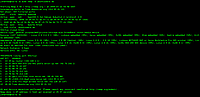
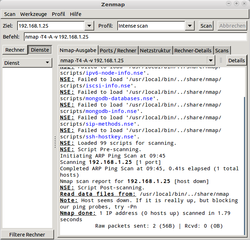

nmap
Dieser Artikel wurde für die folgenden Ubuntu-Versionen getestet:
Ubuntu 14.04 Trusty Tahr
Zum Verständnis dieses Artikels sind folgende Seiten hilfreich:
Nmap  oder auch "Network Mapper" ist ein Portscanner, der seit 1997 vom "Nmap-Developer-Team" entwickelt wird. Mit Nmap lassen sich Netzwerke und / oder Computer im Internet (d.h. mit eigener IP-Adresse) auf offene Ports und den darauf lauschenden Diensten prüfen. Nmap kann z.B. zum Testen der eigenen Firewall-Konfiguration eingesetzt werden oder auch zum Testen des eigenen Computers auf offene Ports und (eventuell unerwünschte) im Hintergrund laufende Dienste.
oder auch "Network Mapper" ist ein Portscanner, der seit 1997 vom "Nmap-Developer-Team" entwickelt wird. Mit Nmap lassen sich Netzwerke und / oder Computer im Internet (d.h. mit eigener IP-Adresse) auf offene Ports und den darauf lauschenden Diensten prüfen. Nmap kann z.B. zum Testen der eigenen Firewall-Konfiguration eingesetzt werden oder auch zum Testen des eigenen Computers auf offene Ports und (eventuell unerwünschte) im Hintergrund laufende Dienste.
Installation¶
 Folgendes Paket muss installiert [1] werden:
nmap
 mit apturl
mit apturl
Paketliste zum Kopieren:
sudo apt-get install nmap
sudo aptitude install nmap
Aus dem Quelltext¶
Alternativ kann auch die neueste Version von nmap kompiliert [2] werden, da die Version aus den offiziellen Paketquellen meist etwas älter ist. Zuerst lädt man den aktuellen Quelltext als Archivdatei nmap-VERSION.tar.bz2  herunter. Um Nmap zu kompilieren, öffnet man ein Terminal [3] und führt die folgenden Befehle im Downloadverzeichnis aus:
herunter. Um Nmap zu kompilieren, öffnet man ein Terminal [3] und führt die folgenden Befehle im Downloadverzeichnis aus:
bzip2 -cd nmap-VERSION.tar.bz2 | tar xvf - cd nmap-VERSION ./configure make sudo checkinstall ## oder sudo make install
Der letzte Befehl erstellt und installiert ein DEB-Paket. Nur so lässt sich eine selbstkompilierte Version auch wieder sauber deinstallieren (im Gegensatz zu sudo make install).
Bedienung¶
Um Nmap zu starten, öffnet man ein Terminal [3] und führt den folgenden Befehl aus:
sudo nmap [Art des Scans] <Optionen> Ziel
Als Ziel sollte eine IP-Adresse (oder ein Adressbereich) angegeben werden. Wird Nmap ohne Angabe eines Ziels aufgerufen, so erhält man als Ausgabe eine kurze Übersicht über die verschiedenen Scan-Techniken und Optionen.
Hinweis:
Nmap kann auch ohne Root-Rechte gestartet werden, allerdings ist der Funktionsumfang (also die Art der möglichen Scans) dann stark eingeschränkt.
Scan-Techniken¶
Nmap kennt verschiedene Scan-Techniken, die wie folgt aufgerufen werden können:
| nmap - Scan-Techniken | |
| Scan Technik | Beschreibung |
-sT | Einfacher Connect Scan. Hierbei wird pro zu scannendem Port eine volle TCP-Verbindung auf- und wieder abgebaut. Dieser Scan steht als einziger zur Verfügung, wenn nmap ohne Root-Recht aufgerufen wird. |
-sS | "SYN-Stealth-Scan": Ähnlich -sT, allerdings wird keine komplette TCP-Verbindung aufgebaut, daher unauffälliger. (Standard bei Root-Rechten) |
-sU | Scannt UDP-Ports statt TCP. |
-sP | Ping-Scan: Prüft nur auf Erreichbarkeit über Ping. Sinnvoll, um ganze Netzbereiche auf aktive Hosts zu testen. |
Experten-Info:
Folgende etwas exotischere Techniken (und noch weitere) können in Einzelfällen sinnvoll sein. Es empfiehlt sich aber das vorherige Studium der Manpage oder der Homepage von nmap, um die Besonderheiten und möglichen Erkenntnisse zu verstehen.
| Besondere Scantechniken | |
| Scan Technik | Beschreibung |
-sF , -sN , -sX | nmap sendet an die zu scannenden Ports bewusst manipulierte bzw. falsche TCP-Pakete. Anhand der Reaktion des Ports (bzw. des Servers) lassen sich ggfs. Rückschlüsse ziehen, ob der Port offen oder von einer Firewall geschützt ist. Im Vergleich zu -sT oder -sR ebenfalls unauffälliger. |
-sA, -sW | Dient ebenfalls zum Testen, ob ein Port offen oder geschlossen bzw. geschützt ist. Besonders gut zum Erkennen von Firewalls. |
Optionen¶
Nmap kennt diverse Optionen, die mit den oben genannten Scan-Techniken kombiniert werden können:
Versions- und OS-Erkennung¶
| nmap - Optionen (Version und OS) | |
| Option | Beschreibung |
-sR | Wird ein RPC-Dienst erkannt, so werden zusätzliche RPC-Pakete gesendet, da so evtl. weitere Informationen zum dem auf dem betreffenden Port lauschenden Dienst herausgefunden werden können. |
-sV | Versucht durch zusätzliche Tests, den Dienst auf jedem offenen Port zu identifizieren. Beinhaltet -sR. |
-O | OS-Detection: Versucht, an besonderen Eigenarten der Netzwerkimplementierungen das Betriebssystem des Zieles zu identifizieren. |
-A | Kurzform für -sV -O |
Ports¶
Standardmäßig scannt Nmap alle Ports von 1 bis 1024, sowie die höheren, die in der Datei /usr/share/nmap/nmap-services aufgeführt sind. Folgende Optionen erzeugen ein abweichendes Verhalten:
| nmap - Optionen (Ports) | |
| Option | Beschreibung |
-p X | Scannt nur Port X |
-p X-Y | Scannt nur Port X bis Y |
-p X,Y,Z | Scannt die Ports X, Y und Z |
-p- | Alle Ports scannen |
-F | Schneller Scan, scannt nur die bekannten Ports, welche in der Datei nmap-services aufgeführt sind. |
-r | Scannt alle Ports in numerischer Reihenfolge, was zu besserer Übersichtlichkeit mit der Option -v führen kann. Standardmäßig wählt nmap eine zufällige Reihenfolge. |
sonstige Optionen¶
| nmap - Optionen (Sonstige) | |
| Option | Beschreibung |
-P0 | Normalerweise überprüft nmap vor einem vollen Portscan über Ping und TCP-Port 80, ob der Rechner überhaupt existiert und online ist. Diese Option schaltet das ab und wird benötigt um Hosts zu scannen, die keinen Webserver laufen haben und Ping blocken. |
-e eth0 | Weist nmap explizit an, die Netzwerkschnittstelle eth0 zu nutzen. Normalerweise wählt nmap die Schnittstelle selber aus. |
-oN DATEI | Protokolliert den Scan in DATEI |
-v | Gibt zusätzliche Informationen während des Scans aus. Kann nie schaden. |
Zenmap¶

Zenmap ist ein grafische Benutzeroberfläche für Nmap. Zenmap wird über folgendes Paket installiert [1]:
zenmap (universe)
mit apturl
Paketliste zum Kopieren:
sudo apt-get install zenmap
sudo aptitude install zenmap
Gestartet wird Zenmap aus dem GNOME Menü unter
"Anwendungen -> Internet -> Zenmap"
Auch mit Zenmap sind alle Scantechniken nur verfügbar, wenn das Programm mit Root-Rechten gestartet wird.
Mit Hilfe von Zenmap kann man die verschiedenen oben geschriebenen Scan-Techniken und Optionen bequem aus diversen Auswahlmenüs zusammenstellen. Zenmap stellt dann den entsprechenden Aufruf von Nmap in einer Zeile am unteren Rand des Fensters dar.

- Erstellt mit Inyoka
-
 2004 – 2017 ubuntuusers.de • Einige Rechte vorbehalten
2004 – 2017 ubuntuusers.de • Einige Rechte vorbehalten
Lizenz • Kontakt • Datenschutz • Impressum • Serverstatus -
Serverhousing gespendet von